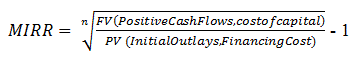

While the internal rate of return (IRR) assumes the cash flows from a project are reinvested at the IRR, the modified IRR assumes that positive cash flows are reinvested at the firm's cost of capital, and the initial outlays are financed at the firm's financing cost. Therefore, MIRR more accurately reflects the cost and profitability of a project.
The formula for MIRR is:
For example, say a two-year project with an initial outlay of $195 and a cost of capital of 12%, will return $121 in the first year and $131 in the second year. To find the IRR of the project so that the net present value (NPV) = 0:
NPV = 0 = -195 + 121/(1+ IRR) + 131/(1 + IRR)2 NPV = 0 when IRR = 18.66%
To calculate the MIRR of the project, we have to assume that the positive cash flows will be reinvested at the 12% cost of capital. So the future value of the positive cash flows is computed as:
$121(1.12) + $131 = $266.52 = Future Value of positive cash flows at t = 2
Now you divide the future value of the cash flows by the present value of the initial outlay, which was $195, and find the geometric return for 2 periods.
=sqrt($266.52/195) -1 = 16.91% MIRR
You can see here that the 16.91% MIRR is materially lower than the IRR of 18.66%. In this case, the IRR gives a too optimistic picture of the potential of the project, while the MIRR gives a more realistic evaluation of the project.
{kind=link}